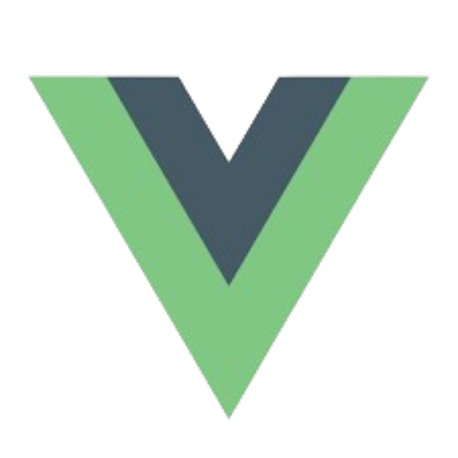
Vue.js
Framework utilisé pour développer une interface dynamique, fluide et réactive.
AllPerf Business Intelligence est une entreprise spécialisée dans la dématérialisation et la Business Intelligence. L'entreprise est un éditeur de solutions logicielles dédiées à l'informatisation et à l'automatisation des processus métiers.
Membre de la FNTC (Fédération Nationale des Tiers de Confiance) et partenaire GS1, AllPerf propose des solutions de signature électronique, et horodatage (PDF, XML, DOCX).
| Dénomination | AllPerf Business Intelligence |
|---|---|
| Forme juridique | SARL (Société à Responsabilité Limitée) |
| Date de création | 2 juillet 2008 |
| Adresse | 11-13 Rue du Général de Larminat, 94000 Créteil |
| Site web | allperf.fr |
Fondée le 2 juillet 2008, AllPerf BI s'est positionnée dès ses débuts comme un acteur spécialisé dans la dématérialisation conforme aux directives européennes et aux recommandations de la DGI.
En plus de 15 ans d'existence, l'entreprise a développé une expertise reconnue en hébergement de solutions de dématérialisation et en gestion numérique des documents.
AllPerf est conforme RGPD (Règlement Général sur la Protection des Données), assurant l'hébergement en France et le chiffrement des données sensibles.
L'entreprise garantit la sécurité et la confidentialité des informations de ses clients tout en respectant les normes européennes en vigueur.
La stratégie d'AllPerf repose sur le développement de solutions sur mesure à déploiement rapide, en s’adaptant aux besoins de leurs clients. L'entreprise se différencie par sa capacité à adapter ses outils aux spécificités métier de chaque client.
L'intégration de technologies modernes (API, Cloud, SaaS) et le renforcement de la conformité réglementaire constituent les axes de croissance principaux.
AllPerf s'inscrit dans une démarche RSE en proposant des solutions qui réduisent l'impact environnemental de la gestion documentaire. La dématérialisation des factures, contrats et courriers contribue directement à la réduction de papier.
L'entreprise met également en place des pratiques comme le télétravail, l'accueil de stagiaires BTS/Licence et l'utilisation de technologies ouvertes pour limiter la dépendance aux éditeurs propriétaires.
Durant mon stage chez AllPerf Business Intelligence, j'ai conçu et développé un portfolio connecté à Notion utilisant Vue.js. Ce projet visait à créer une solution dynamique permettant de gérer le contenu du portfolio via l'API Notion, facilitant ainsi les mises à jour et la centralisation des données.
Captures d'écran des trois missions réalisées.

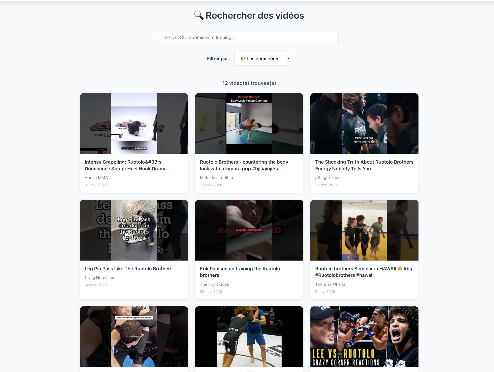
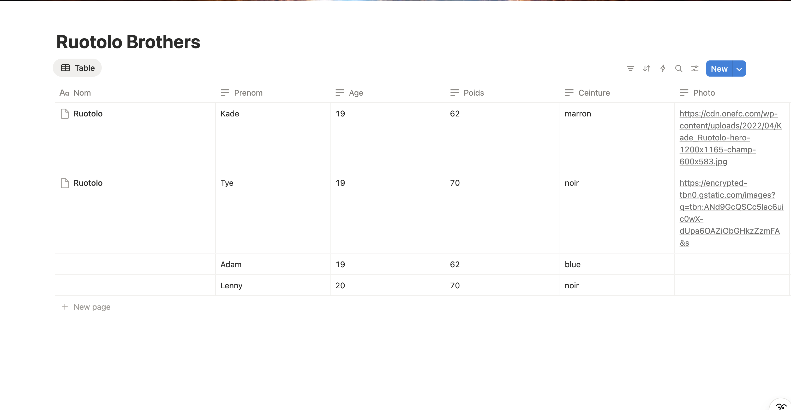
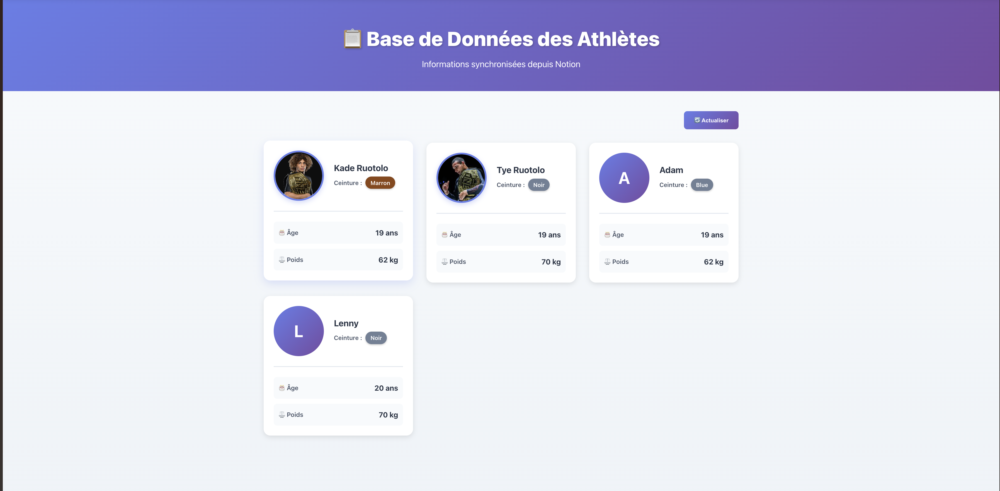
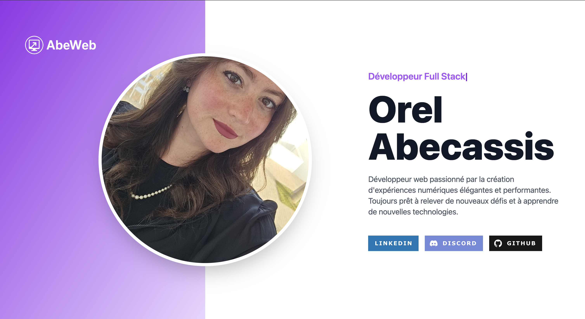
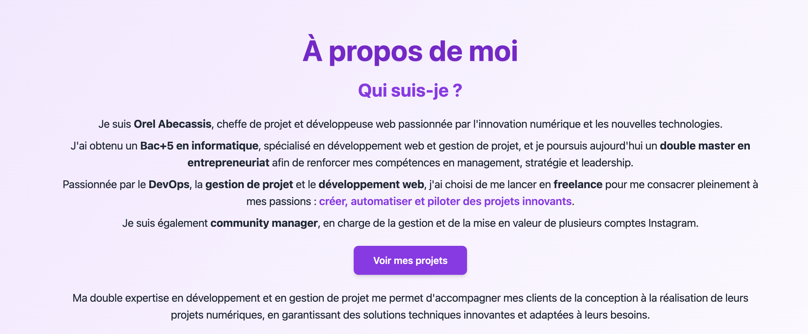
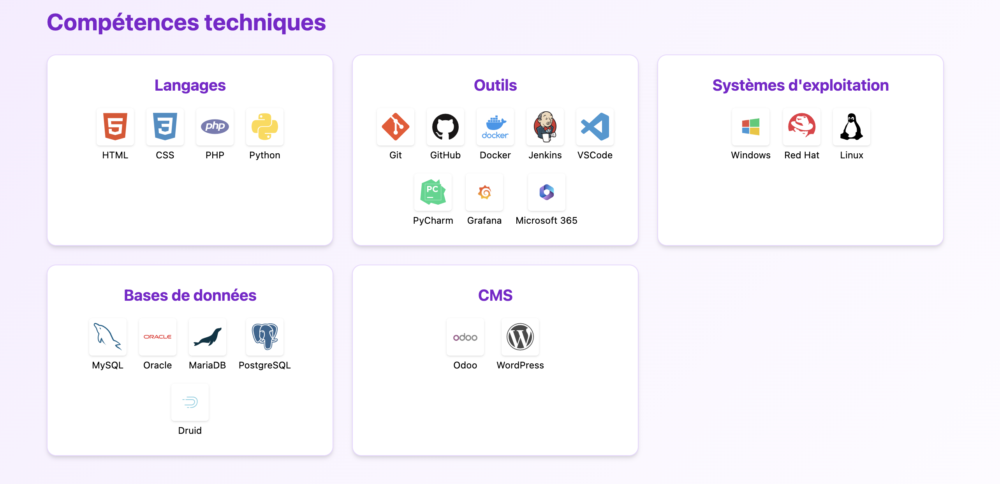
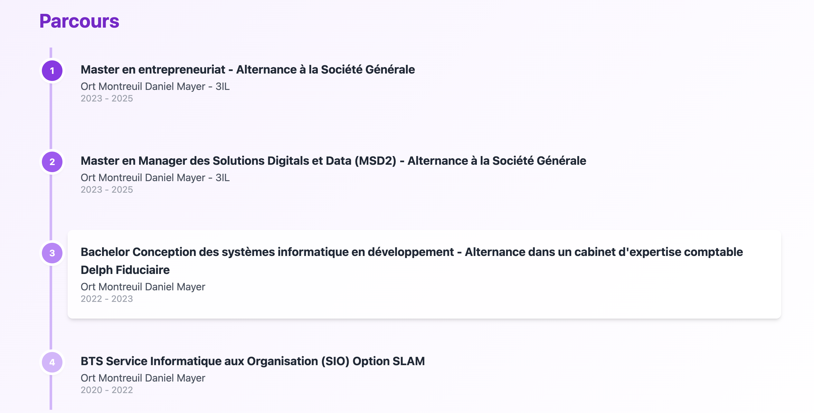
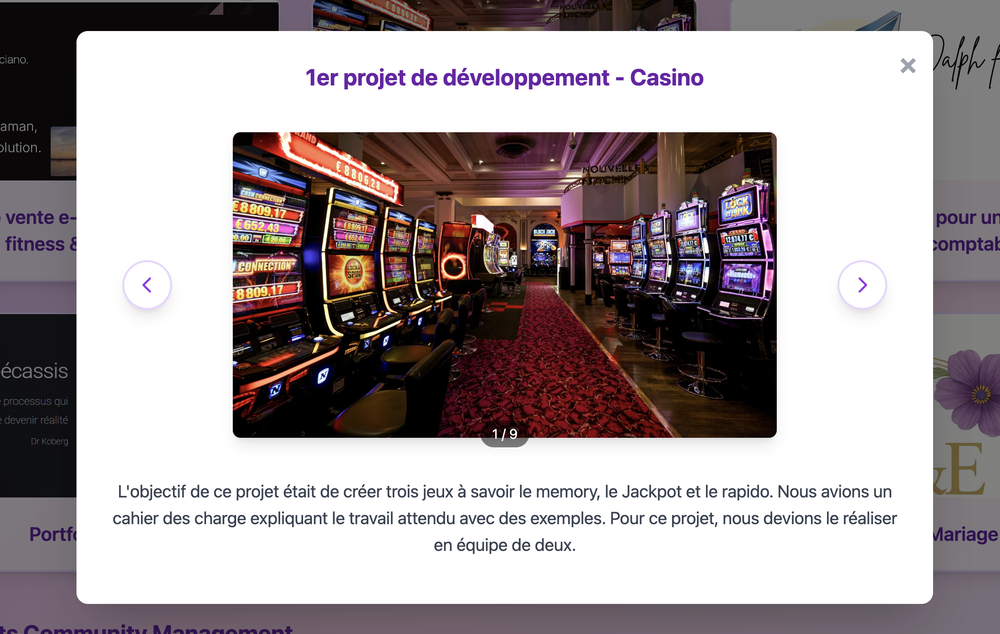
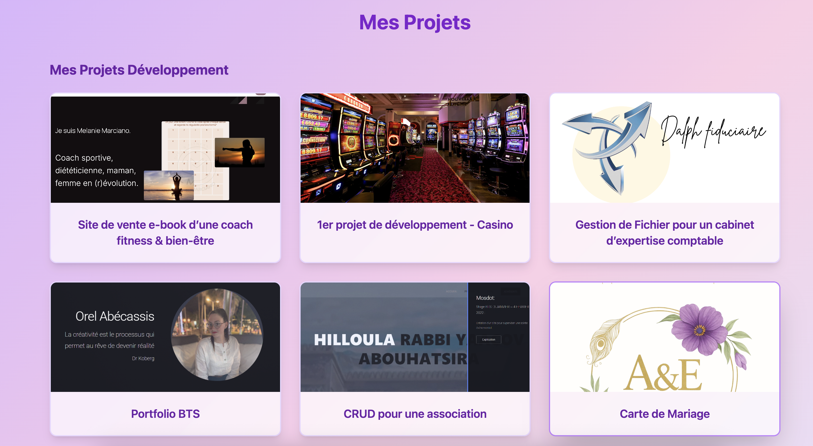
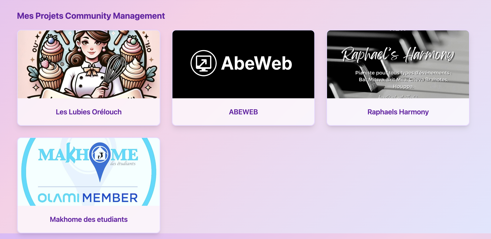
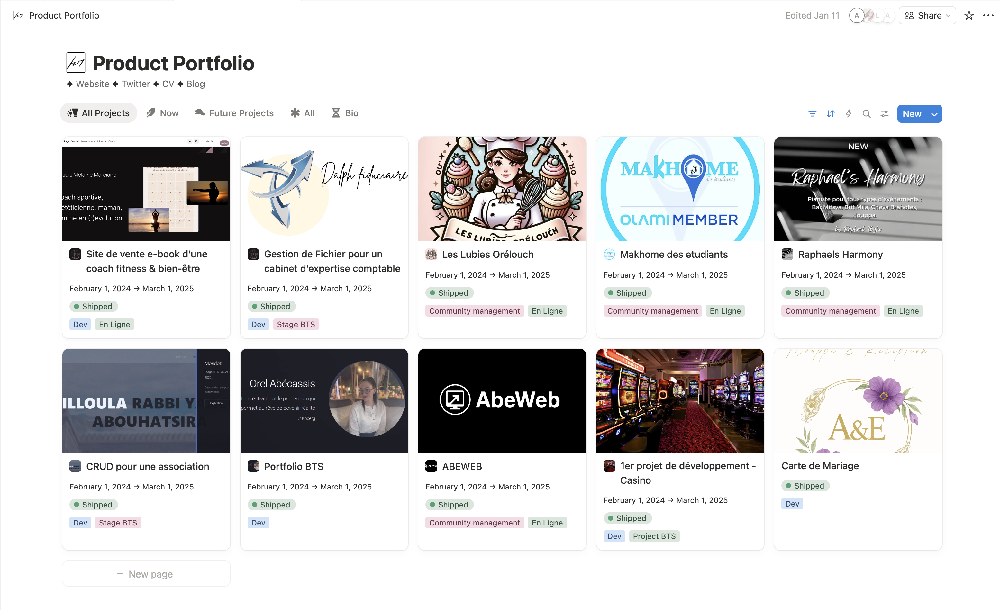
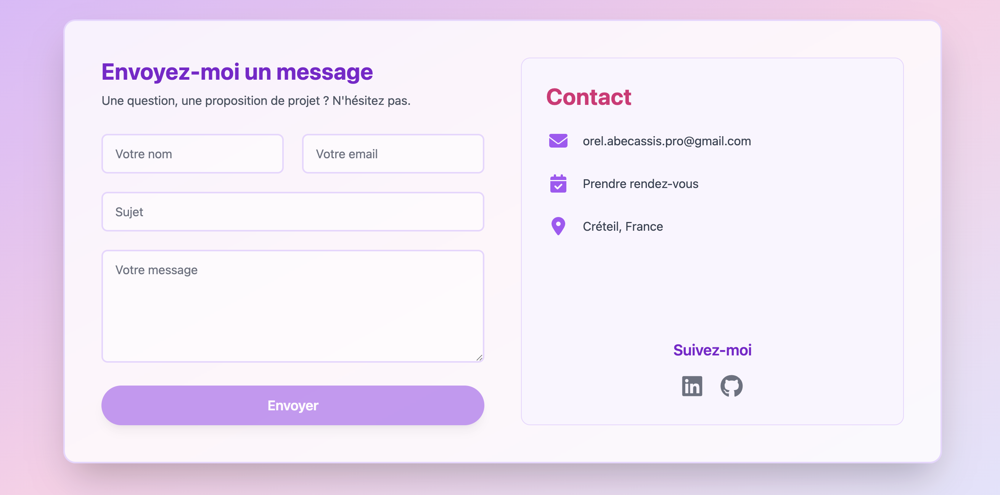

Framework utilisé pour développer une interface dynamique, fluide et réactive.
Outil utilisé comme CMS pour centraliser et mettre à jour facilement les contenus.
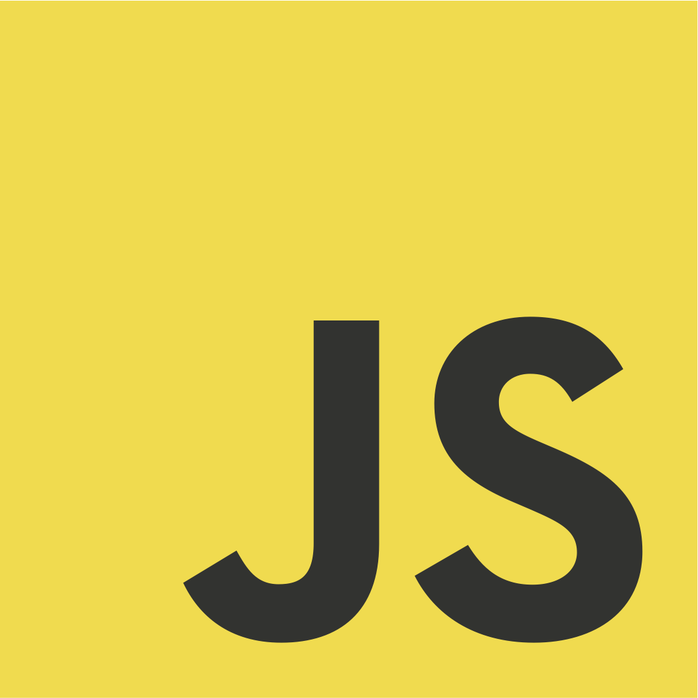
Langage utilisé pour la logique applicative et l'organisation technique du projet.

Plateforme utilisée pour le versionnement du code et le suivi des évolutions du projet.
J'ai rencontré plusieurs défis durant ce stage, notamment :
Pour surmonter ces difficultés, j'ai sollicité l'aide de mes collègues, consulté régulièrement la documentation officielle de Vue.js et Notion, et utilisé diverses ressources en ligne telles que des vidéos explicatives et des tutoriels. J'ai également mis en place des outils de gestion de projet pour mieux organiser mon travail. De plus, j'ai utilisé l'intelligence artificielle comme outil d'accompagnement tout au long du projet, notamment pour optimiser mon code, comprendre certains concepts techniques complexes et améliorer la qualité globale de mes développements.
Ce stage a été une étape importante dans mon parcours. J'ai pu mettre en pratique mes compétences tout en découvrant de nouvelles technologies. J'ai découvert de nombreux aspects de la vie d'un développeur, et remarqué que cela ne se limite pas simplement à du développement, mais bien à de la recherche, de l'organisation, de la communication et enfin de la programmation.
Cette expérience m'a également permis de mieux comprendre l'importance de la collaboration et de l'adaptabilité dans un environnement professionnel. Je suis convaincu que les compétences et les leçons apprises durant ce stage me seront précieuses pour mes futures expériences professionnelles.